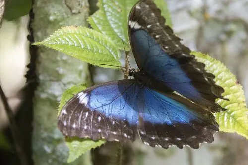

昆虫 · 动物界
大蓝闪蝶 Morpho menelaus

翅面呈现金属般蓝色光泽的大型蝴蝶，闪色来自翅鳞微观结构而非色素，是亚马孙雨林最耀眼的蝴蝶之一。
- 分类
- 门节肢动物门纲昆虫纲目鳞翅目科蛱蝶科属闪蝶属
- 栖息环境
- 亚马孙热带雨林的中下层、林缘与河谷，偶见于林间空地
- 地理分布
- 巴西北部、圭亚那、委内瑞拉等南美北部地区
- 保护级别
- 暂无评估；受雨林砍伐与标本贸易影响
物种志
大蓝闪蝶翅展约 12–15 cm，雄蝶翅面为耀眼的金属蓝色，前翅外缘和前缘镶黑边，后翅有波浪状边缘；雌蝶多为褐色或黄褐色，仅在翅面中央保留蓝色斑块，翅背还带有眼斑。蓝色的来源不是色素，而是翅鳞上多层微观结构对光线的干涉与反射，因此随观察角度变化会呈现明暗和色调的微妙变化。
成虫多在雨林树冠层和林缘活动，飞行呈波浪状起伏，喜吸食腐烂果实的汁液和树干渗出的树液；幼虫取食豆科等寄主植物叶片，身体带有毛簇和腺体。大蓝闪蝶分布于亚马孙盆地及南美北部，是热带雨林健康状况的指示物种之一，也因色彩绚丽成为标本贸易和生态旅游中的明星，栖息地砍伐是其面临的主要威胁。
形态与习性
- 食性成虫吸食腐果和树液；幼虫取食豆科植物叶片
- 翅展约 12–15 cm
- 寿命成虫约 2–3 周
- 繁殖卵产于寄主叶片，幼虫具毛簇与腺体
- 结构色翅鳞多层结构反射蓝光，随角度变化闪色
- 生态意义热带雨林健康状况的指示物种之一
趣味知识
- 蓝色的来源是翅鳞上的微观结构反射，而不是蓝色色素。
- 雄蝶翅膀在阳光下随视角明暗变化，可用于驱赶竞争者。
- 大蓝闪蝶是雨林蝶类贸易中最受追捧的种类之一。